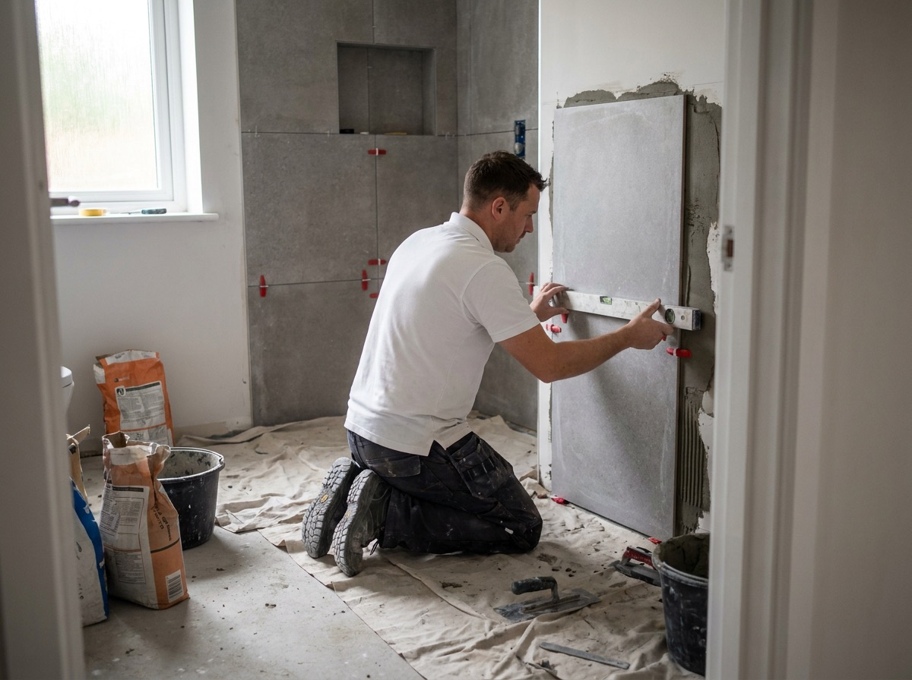
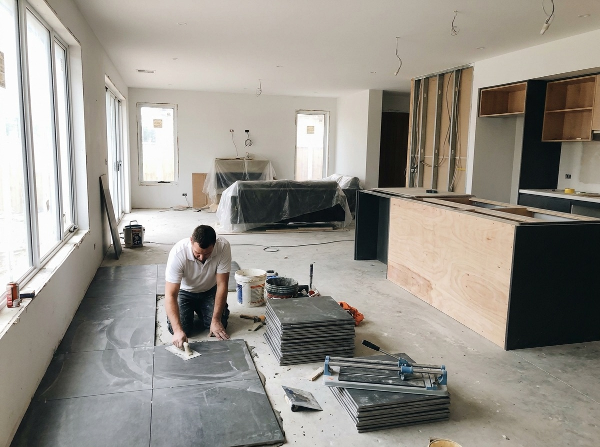
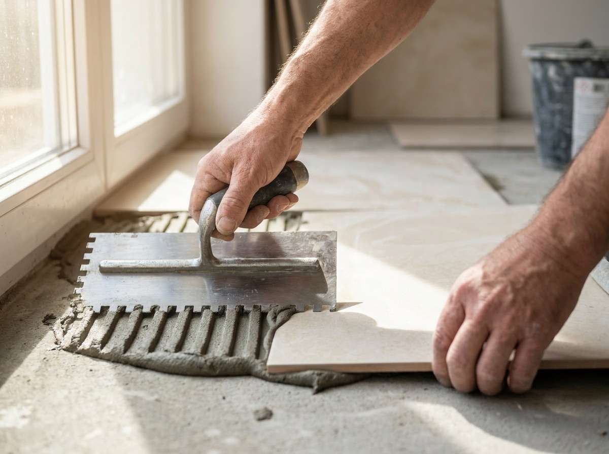
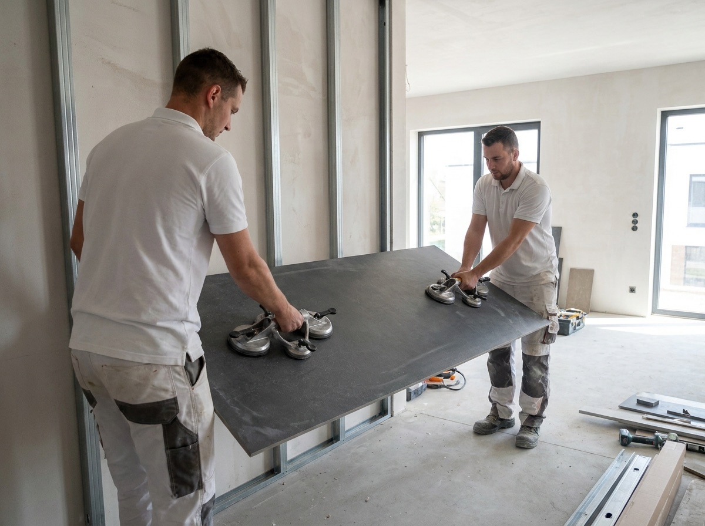
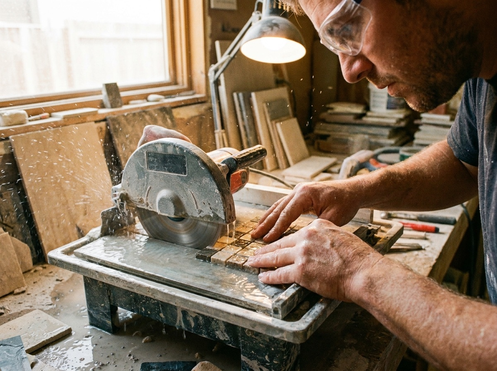
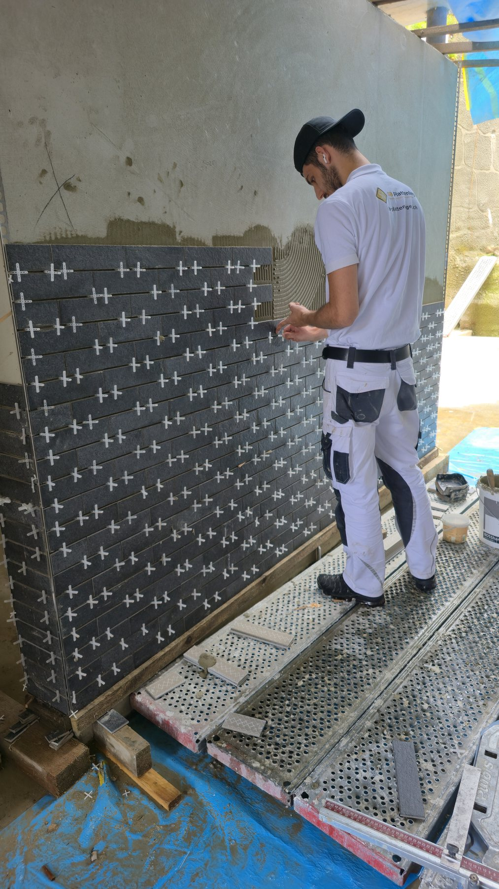
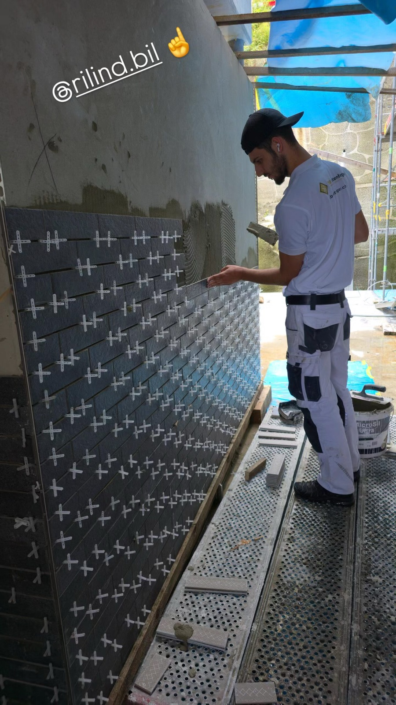
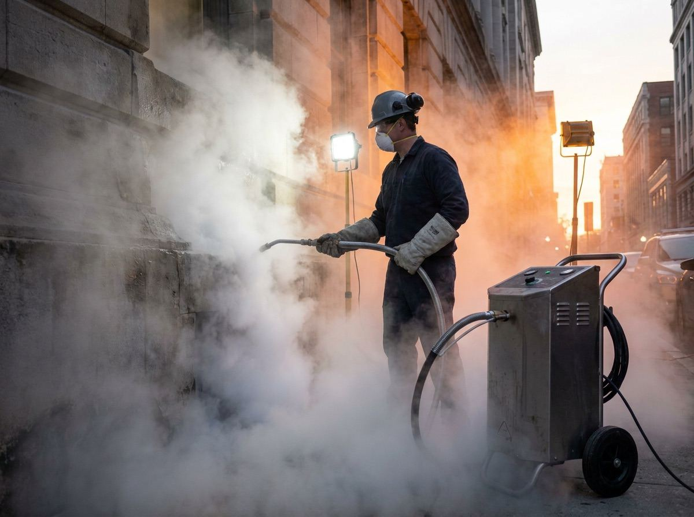

Unsere Leistungen als Plattenleger in der Region Luzern
Wir übernehmen Plattenarbeiten für Neubauten, Umbauten und Renovationen: im Bad, in der Küche, am Boden und an der Fassade. Klicken Sie auf einen Bereich für Details.

Neubauten
Formate, Fugenbild und Übergänge von Anfang an mitgedacht.

Umbauten und Renovationen
Neues, das sauber zum Bestehenden passt.

Badezimmer und Duschen
Boden- und Wandplatten inklusive Abdichtung und Gefälle.

Küchen und Wohnbereiche
Böden und Wandflächen für Küche und Wohnbereich.

Boden- und Wandplatten
Keramik, Feinsteinzeug oder Naturstein, für Boden und Wand.

Grossformatplatten
Ruhig und modern, aber anspruchsvoll in der Verlegung.

Naturstein und Mosaik
Mehr Zeit und Sorgfalt, gerade beim Zuschnitt.

Terrassen und Balkone
Wetterfeste Platten mit dem nötigen Gefälle.

Fassadenarbeiten
Fassadenplatten, die nicht alle Plattenleger machen.

Reparatur- und Ausbesserungsarbeiten
Gezielte Reparatur statt ganzer Neuverlegung.

Trockeneisreinigung
Schonende Reinigung ohne Wasser und ohne Chemie.